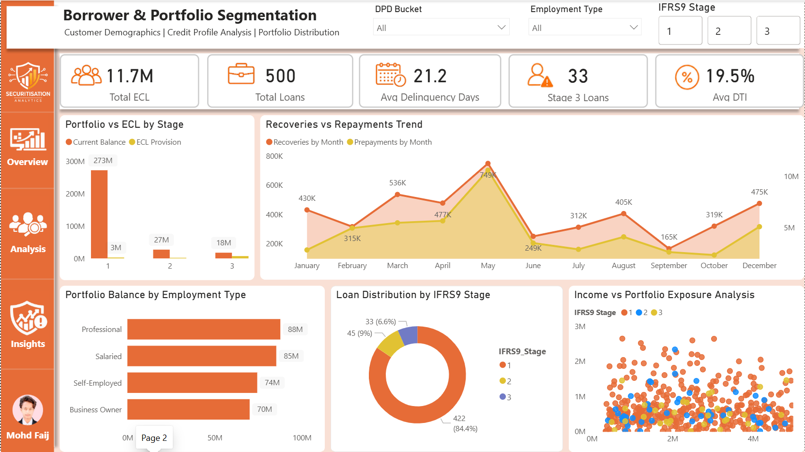
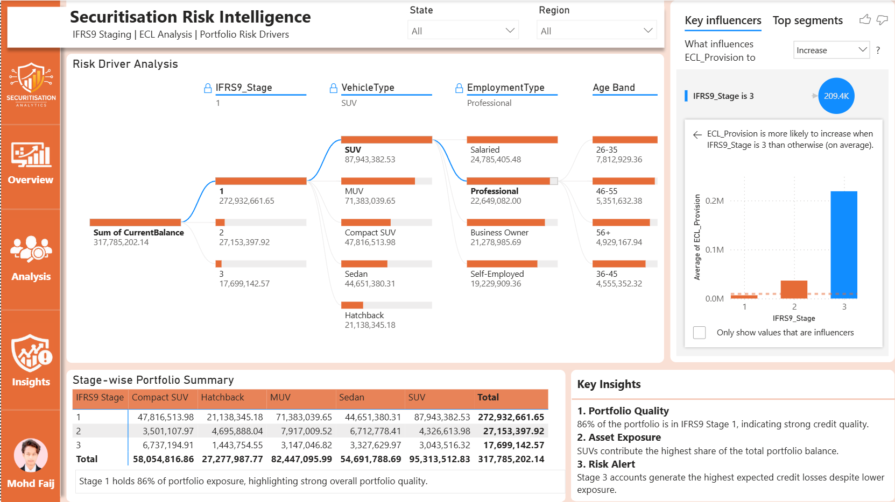

A comprehensive credit risk intelligence system built on Power BI, designed to monitor, analyse,
and visualise an auto loan securitisation portfolio in compliance with IFRS9 standards.
Problem Statement
Auto loan portfolios require continuous monitoring for credit deterioration
under IFRS9. Manual reporting is slow, error-prone, and lacks visual
drill-down capability for risk officers and stakeholders.
Solution Built
A 3-page interactive Power BI dashboard providing real-time portfolio
health monitoring, ECL analysis, borrower segmentation, and automated
risk driver identification using DAX and data modelling.
Project Objectives
Monitor portfolio health across IFRS9 Stage 1, 2, and 3 classifications
Identify and rank key risk drivers influencing ECL Provision using Key Influencers visual
Segment borrowers by demographics, vehicle type, employment, and credit profile
Track monthly default rate, net loss rate, recovery, and repayment trends
Provide a single-view executive KPI dashboard for stakeholder reporting
Deliver an 8-page project report documenting methodology, findings, and recommendations
Dashboard
Dashboard Walkthrough
Three interconnected pages covering risk analysis, borrower segmentation, and executive KPIs.
Add dashboard_page1.png to assets/ folder
Tech_Overview — Risk Driver Analysis
Page 1 of 3
Decomposes the total portfolio balance across key risk dimensions — IFRS9 Stage,
Vehicle Type, Employment Type, and Age Band. Uses Power BI's Key Influencers
visual to automatically identify which factors most strongly drive ECL Provision increases.
Decomposition Tree
Key Influencers Visual
Stage-wise Summary Table
Key Insights Panel
State & Region Filters
Total Exposure₹317.8M
Stage 1₹272.9M
Stage 3 ECL avg₹209.4K
Top VehicleSUV

Add dashboard_page2.png to assets/ folder
Tech_Analysis — Borrower & Portfolio Segmentation
Page 2 of 3
Deep-dives into customer demographics and credit profiling. Analyses
recoveries vs repayments monthly trends, portfolio distribution by
employment type, and income vs exposure scatter analysis per IFRS9 stage.
Portfolio vs ECL by Stage
Recoveries vs Repayments Trend
Balance by Employment Type
Loan Distribution Donut
Income vs Exposure Scatter
Total ECL₹11.7M
Total Loans500
Avg Delinquency21.2 Days
Avg DTI19.5%

Add dashboard_page3.png to assets/ folder
Tech_Insights — Main KPI Dashboard
Page 3 of 3
Executive-level single-view dashboard covering all critical portfolio KPIs.
Includes monthly default rate trends, net loss rate, delinquency distribution
by DPD bucket, borrower CIBIL scatter, and IFRS9 stage-wise risk summary table.
5 KPI Cards
Balance by Age Segment
Delinquency by DPD Bucket
Borrower Credit Profile
Monthly Default Rate Trend
Net Loss Rate Trend
IFRS9 Stage Risk Summary
Avg CIBIL739.2
Default Rate6.6%
Delinquent115 Loans
Current DPD86.76%
Stack
Tech Stack & Tools
Technologies used to build, model, and deploy the dashboard.